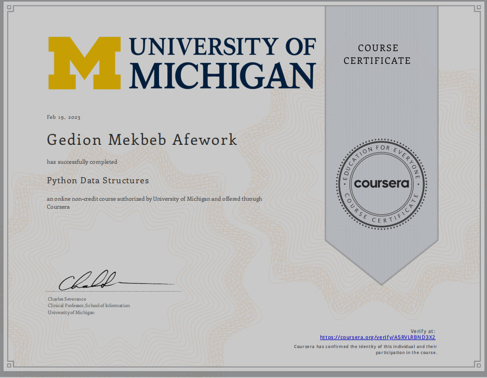
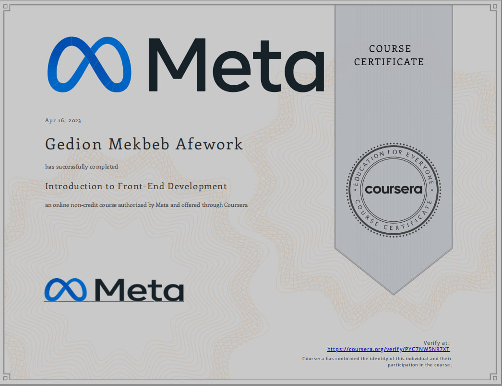
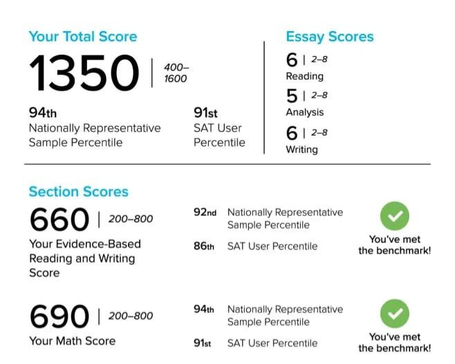
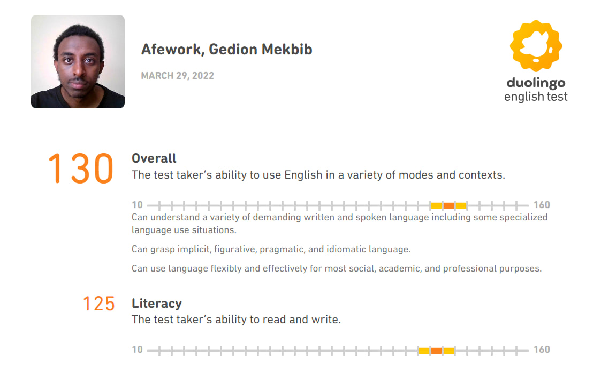

TUTORING
I have been actively involved in tutoring children, leveraging my skills and knowledge to provide personalized and effective learning experiences. My focus is on fostering a positive and supportive environment, helping students grasp challenging concepts and achieve their academic goals.
STEM-POWER
STEMpower founders have been implementing many successful STEM programs (Science, Technology, Engineering, and Math) in Ethiopia and nearby countries. Pre-university students learn through our hands-on labs, engaging them towards advanced STEM study and careers. STEM enrichment programs bridge genders and ethnicity, fostering peace and development within and among nations.
VOLUNTEERING

I dedicated my time to volunteer work at an orphanage, where I had the privilege of contributing to the well-being and development of children in need. Engaging with the diverse needs of the orphanage community, I focused on creating a nurturing and uplifting atmosphere. Through various activities, mentorship, and emotional support, I aimed to make a positive impact on the lives of these resilient children. Volunteering at the orphanage has been a profoundly rewarding experience, allowing me to witness the strength and resilience of these young individuals while fostering a sense of compassion and community.
COURSERA
I have always been thinking of joining the realm of Data Science. So, there is no better place than Coursrea. I took the first course of the series Data Science and got 98%
As a software Engineering student, one thing we all should learn is Python. And there is no better place to learn Python than Coursera. I started this series with novice knowledge and now I am a pro.
As a software Engineering student, one thing we all should learn is Python. And there is no better place to learn Python than Coursera. I started this series with novice knowledge and now I am a pro.
Meta's Front-End course is the best place to learn Front-End Web Development. I have understood from simple to complex concepts and I will continue learning there. When I start learning, I had no knowledge, but now, I am a good front-end developer.
SAT
I took the SAT right after COVID. I took and got 1350. I was sick. I know I could get better scores. I achieved a commendable score of 1350 on my SAT, reflecting my dedication and academic proficiency. This accomplishment required focused preparation and a comprehensive understanding of the test material. I am proud of this achievement, as it not only demonstrates my aptitude for standardized testing but also reflects my commitment to academic excellence and future educational pursuits.
DUOLINGO
I successfully attained a score of 130 on the Duolingo English test, showcasing my proficiency in the English language. This achievement reflects my linguistic competence, comprehension, and language skills. I am pleased with this result, as it validates my ability to effectively communicate and comprehend English, an essential asset for various academic and professional endeavors.
